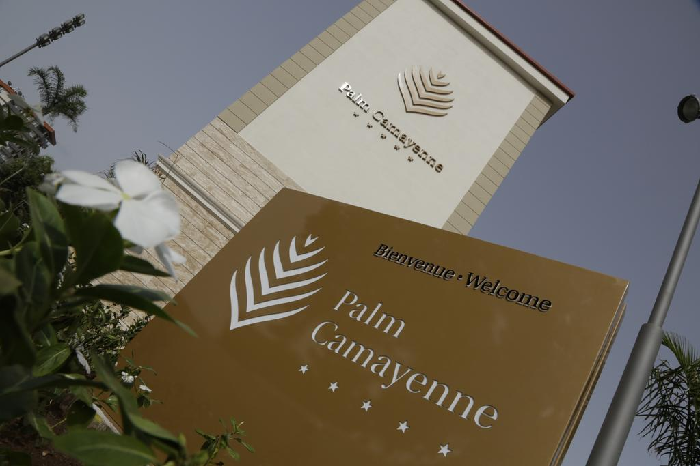

HISTOIRIQUE
TARIFS DES CHAMBRES
MENUS DU RESTAURANT
TARIFS POUR LA PISCINE
COMMANDE EN LIGNE
Quizz

Historique de L'Hôtel Palm Camayenne
L'hôtel Palm Camayenne, premier hôtel cinq étoiles de l'histoire de la République de Guinée , inaugure une nouvelle ère de luxe, confort et exclusivité á Conakry début juin 2013. Face à l'océan Atlantique, en voyant les vagues qui arrivent à la plage, une oasis de vie gracieuse, LHôtel Palm Camayenne capte le glamour et le sentiment du chic colonial dans un cadre somptueux, 123 chambres et suites élégantes, trois restaurants, deux bars, une immense piscine, grand jardin, gym, wellness center, trois salles de conférence, boardroom, centre d'affaires, une exclusive boutique, parking et banque. Dans une atmosphère exclusive, lHôtel Palm Camayenne exprime l'ambiance enchanteresse d'une époque majestueuse, oú temps signifiait jours et nuits de loisirs, et chaque instant est une célébration de splendide raffinement. Cadre unique, l'Hôtel Palm Camayenne se distingue par les piliers et les arcs qui couvrent la façade, l'immensité de l'océan Atlantique situé en face du jardin et les palmiers exotiques qui créent un environnement paradisiaque. Un medley demarbre, lampes en cristal de murano, une décoration exquise et meubles de style colonial français reflètent le monde privilégié de l'hôtel de goût, glamour, élégance, confort et un luxe discret, avec des modernes technologies qui nous offrent toutes les installations dont nous aurions besoin durant notre voyage d'affaires ou loisirs. L'Hôtel Palm Camayenne vous souhaite la bienvenue à Conakry, pour découvrir le mode de vie distinctif d'un unique hôtel cinq étoiles.
 HISTOIRIQUE
HISTOIRIQUE  TARIFS DES CHAMBRES
TARIFS DES CHAMBRES  MENUS DU RESTAURANT
MENUS DU RESTAURANT TARIFS POUR LA PISCINE
TARIFS POUR LA PISCINE COMMANDE EN LIGNE
COMMANDE EN LIGNE  Quizz
Quizz